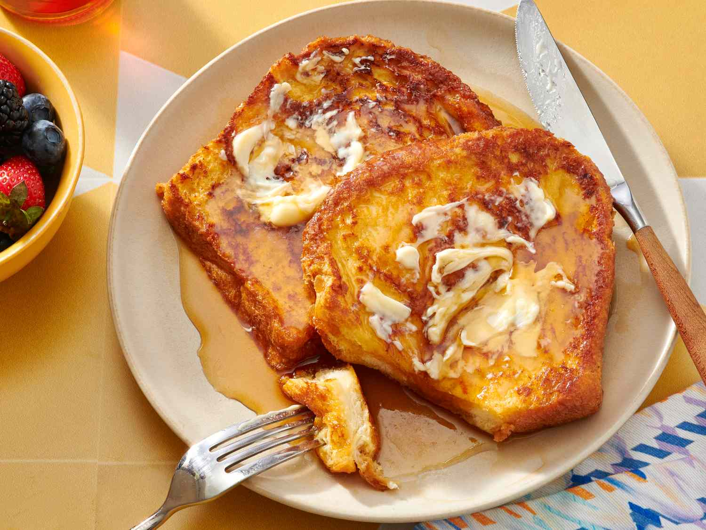

This simple French toast recipe soaks thick slices of bread in a rich egg and milk mixture to make golden, fluffy slices for a delicious breakfast treat. Works with white, whole wheat, brioche, cinnamon-raisin, Italian, or French bread! Delicious served hot with butter and maple syrup.
If you're looking for the best French toast recipe on the internet, you've come to the right place. This tender, fluffy, and indulgent recipe comes together quickly and easily with just five ingredients you already have on hand.
How do you know it's good? Because this deliciously easy recipe has earned over 1,000 rave reviews. Happy home cooks call it a "definite keeper" and "a Sunday morning favorite" (among many other ringing endorsements).
Here's everything you need to know about making the best French toast of your life, including the best bread to use and what ingredients you need. Plus, get our best storage secrets and freezer hacks.
The best breads for French toast are brioche, sourdough, French bread, or challah. These varieties are dense and sturdy enough to handle total saturation in the wet, milky, egg custard without falling apart. However, in a pinch, any thick-sliced white bread will do.
French toast is traditionally made with day-old slices because they absorb the eggy mixture better than fresh ones (and this method prevents waste it's a win-win). Of course, a slightly stale loaf is certainly not a requirement. If you only have fresh bread on hand, that'll work just fine.
Every home cook has their own twist on basic French toast, but most variations contain the following ingredients: